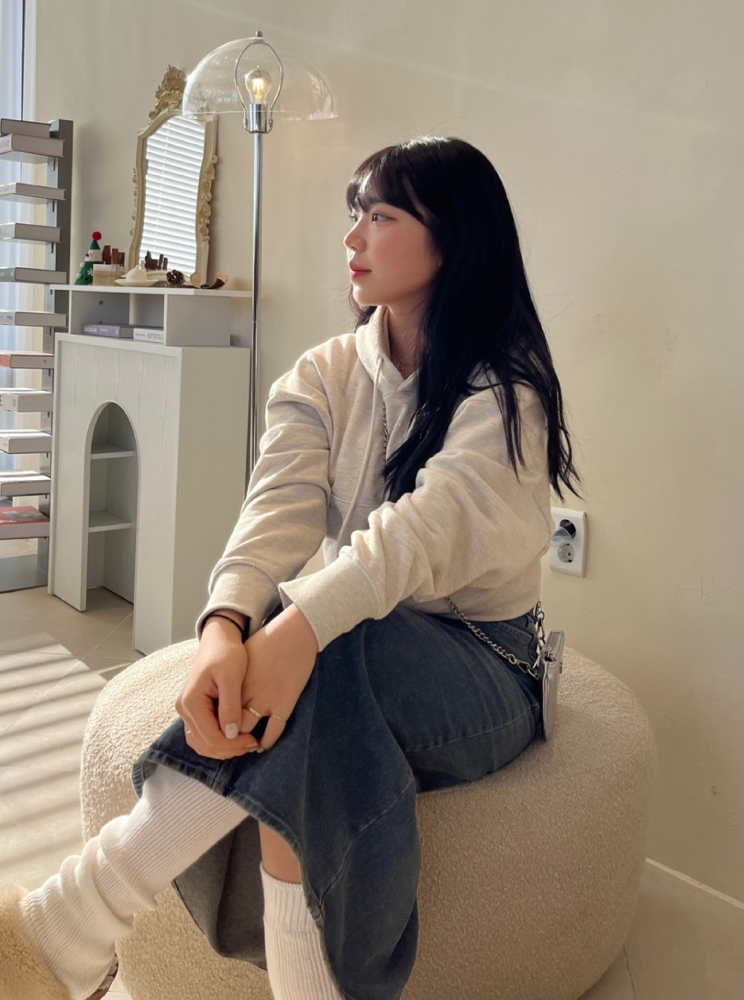
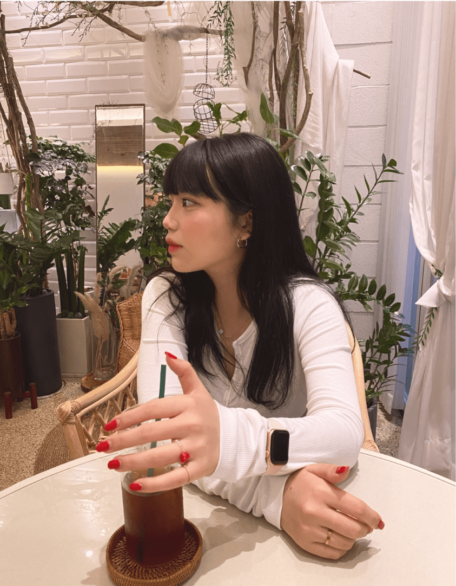
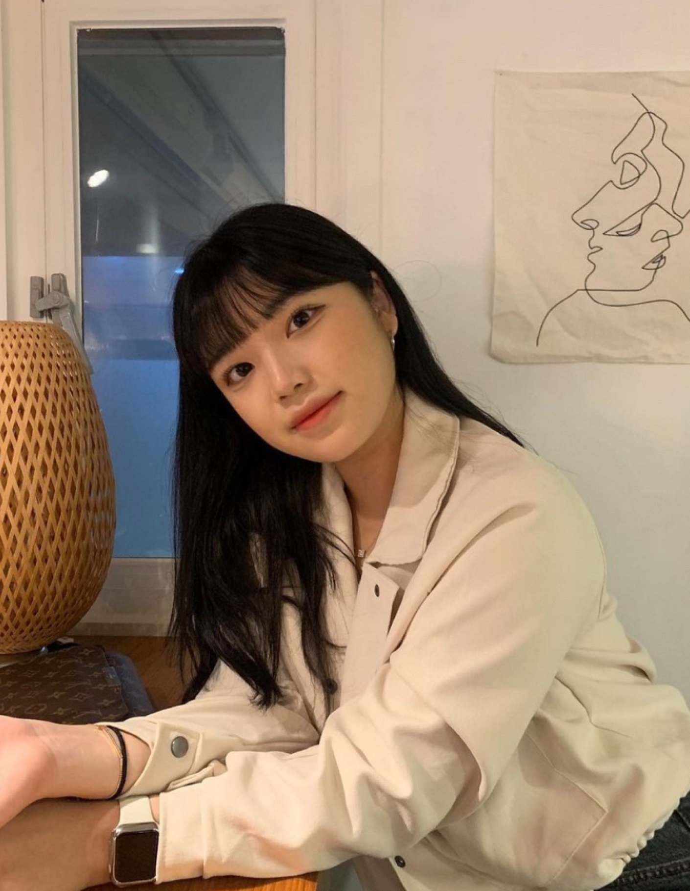

ADD ELEGANCE AND CHARM TO YOUR
SPACE WITH MY CODING.
HELLO ! EVERYONE !
ABOUT ME
WHERE CODINGENDURES:
TIMELESSCODING
FORYOUR STORY



저는 평소 사람들과 어울려 어떤 일을 해내는 것을 좋아합니다. 그
속에서
얻어지는 긍정적인 시너지와 밝은 에너지를 통해 원동력을 얻기
때문입니다. 그렇기 때문에 새롭고 도전적인 것에 흥미를 느끼고
진취적이고 개방적인 사고방식을 가지고 있습니다. 팀을 꾸려 타인을
이끌고 팀워크와 소통으로 팀의 성과를 이루는 과정에서 타인의 성장을
도모하여 협동심이 뛰어납니다.
LEADERSHIP
저는 평소 사람들과 어울려 어떤 일을 해내는 것을 좋아합니다.
그 속에서 얻어지는 긍정적인 시너지와 밝은 에너지를 통해 원동력을
얻기 때문입니다. 그렇기 때문에 새롭고 도전적인 것에 흥미를 느끼고
진취적이고 개방적인 사고방식을 가지고 있습니다. 팀을 꾸려 타인을
이끌고 팀워크와 소통으로 팀의 성과를 이루는 과정에서 타인의 성장을
도모하여 협동심이 뛰어납니다.
저는 평소 사람들과 어울려 어떤 일을 해내는 것을 좋아합니다.
그 속에서 얻어지는 긍정적인 시너지와 밝은 에너지를 통해 원동력을
얻기 때문입니다. 그렇기 때문에 새롭고 도전적인 것에 흥미를 느끼고
진취적이고 개방적인 사고방식을 가지고 있습니다.
PASSION
CODING SITE
WEBSTANDARD항공기계설계를 전공으로 공부하였고, 다양한 분야의 업무를 하며
나의
적성에 맞는 일을 찾고자 노력을 했습니다. 다니던 대학원을 휴학하고
국비지원학원에서 약 6개월간의 여정을 시작했습니다. 아직은 서툴고
부족하다는 점을 알고 있습니다.
WEBSTANDARD항공기계설계를 전공으로 공부하였고, 다양한 분야의 업무를 하며
나의
적성에 맞는 일을 찾고자 노력을 했습니다. 다니던 대학원을 휴학하고
국비지원학원에서 약 6개월간의 여정을 시작했습니다. 아직은 서툴고
부족하다는 점을 알고 있습니다.
webstandard항공기계설계를 전공으로 공부하였고, 다양한 분야의 업무를 하며
나의
적성에 맞는 일을 찾고자 노력을 했습니다. 다니던 대학원을 휴학하고
국비지원학원에서 약 6개월간의 여정을 시작했습니다. 아직은 서툴고
부족하다는 점을 알고 있습니다.
WEBSTANDARD항공기계설계를 전공으로 공부하였고, 다양한 분야의 업무를 하며
나의
적성에 맞는 일을 찾고자 노력을 했습니다. 다니던 대학원을 휴학하고
국비지원학원에서 약 6개월간의 여정을 시작했습니다. 아직은 서툴고
부족하다는 점을 알고 있습니다.
SCRIPT CODING
since
2022
한국 장학재단 사회리더 장학생 멘토링
4차 산업혁명 IT 멘토단 팀장
우즈베키스탄 유학생 학교 적응 멘토단 팀장
SW / AI 사업단 GROW UP 캡스톤 경진대회 입상 수상
Pitching 아카데미 공과대학장상 은상 수상
필리핀 어학연수 지구온난화 / IT PPT 발표 동상 수상